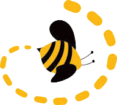

My name is Christopher Salam and I am an agricultural, chemical, environmental, and software engineer, currently working at Ziploop 
I was in the first cohort of Telegraph Academy , an amazing accelerated JavaScript immersive for underrepresented minorities in Berkeley, CA
Open source projects I've worked on:
Katfish: An honest profile program built in React Native and Firebase
Six Dribbles: A Bacon Oracle for NBA players built with Angular, Neo4j, Node, and Express.
Video-ke: A dual video player with crossfader powered by Youtube
I work as a freelance developer with Amy Yoshitsu
My resume can be found at my github.io or by clicking on "Work" above
When growing up, I was really captivated by a television show called the Pretender, in which the protagonist was principally good natured and had the cognitive ability to change professions in each episode. To some extent, getting into software has been a way to pursue all my varied and ever-changing interests.
This website uses jekyll and jekyllNow as a static content generator, used github pages before I elected to transition to a full static HTML site, and uses d3 to make the posts list in a tree structure or petri-dish structure